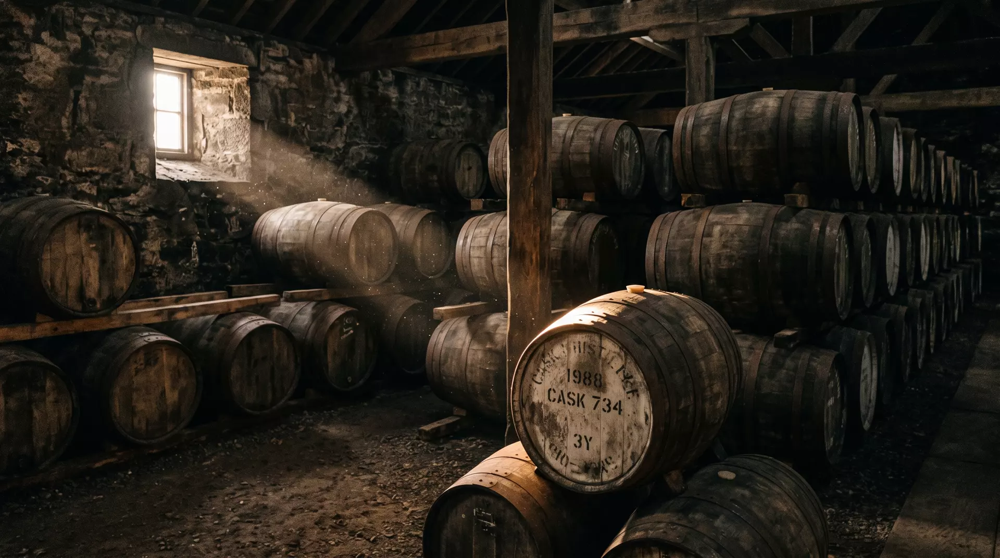

Auchenmor Distillery · Highlands · Est. 1897
Twenty-five years in oak. Two minutes in the glass.
We think that’s a fair trade.
Chapter I
Cask strength 63.5% vol
Fill level 100%
The angels take two percent a year. They have excellent taste.
Chapter II
Drawn straight from a single first-fill oloroso butt in Warehouse No 4. No chill-filtering, no colouring — the cask did that, not us. Two hundred and fourteen bottles. When they’re gone, they’re gone, and so are we, back to waiting.

Chapter III
Row C · dunnage · est. 1903
Chapter IV
57.48°N, 3.12°W. A fold in the hills where the Allt Mhor runs cold over granite. The water arrives soft. We complicate it.
Concerto barley, malted over Highland peat to 22 ppm. Enough smoke to be heard. Not enough to interrupt.
First-fill oloroso butts from Jerez, seasoned four years. The cask is half the recipe. The other half is leaving it alone.
Twenty-five years, give or take a season. The angels took their share. We bottled the rest and called it No 9.